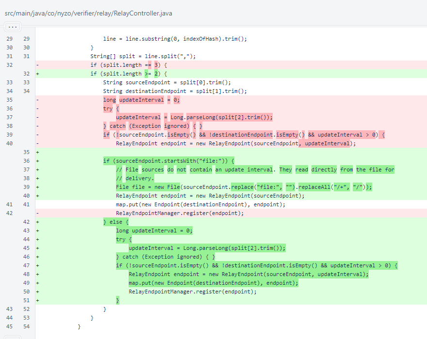
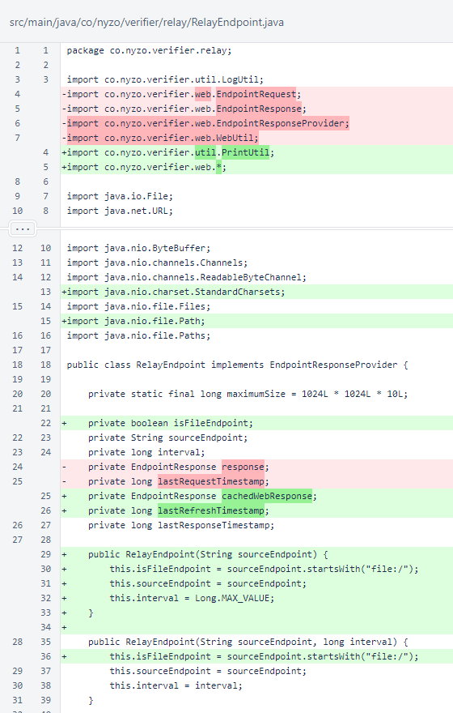
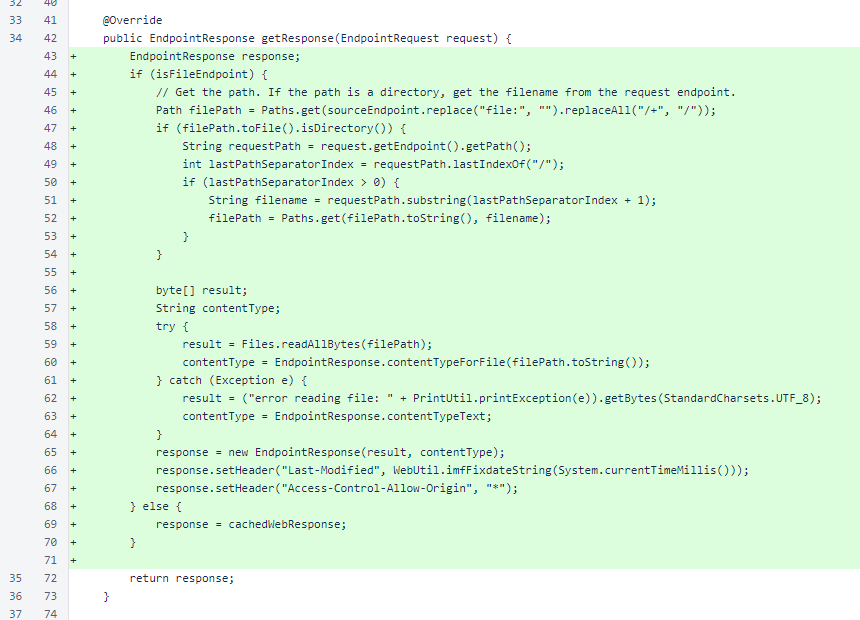
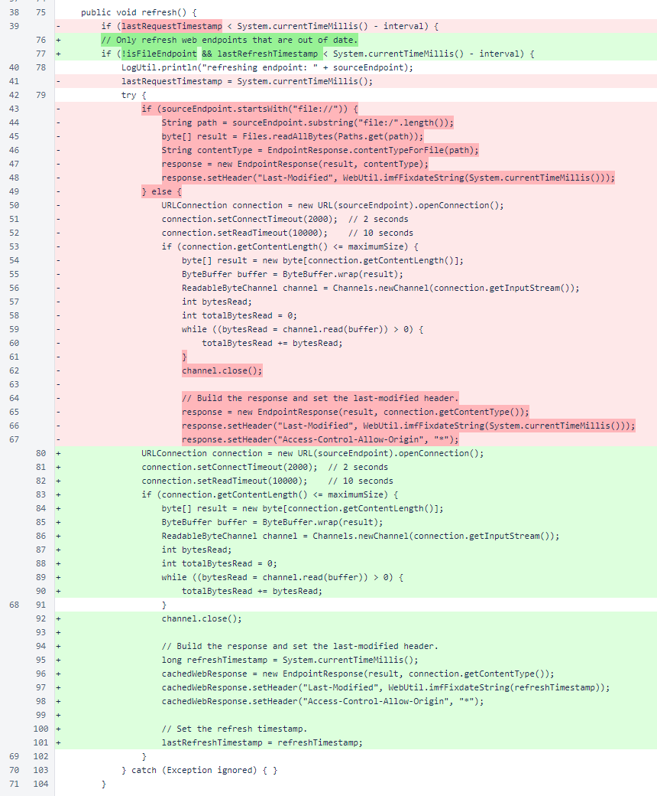
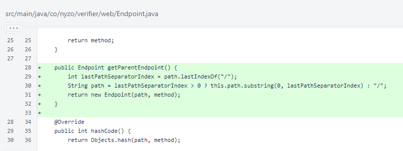
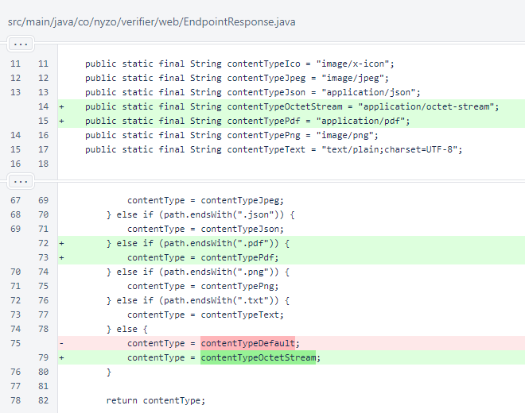
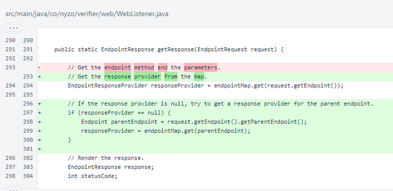

Nyzo version 587 (commit on GitHub) adds the ability to load entire directories on the relay server. Also, it eliminates in-memory caching of files to conserve memory usage.
This version affects the relay server only.
In RelayController.buildEndpointMap(), the update interval is no longer read for file endpoints. If an update interval is provided, it is ignored.
In RelayEndpoint, the response field was renamed to cachedWebResponse to reflect its new responsibility. Also lastRequestTimestamp was renamed to lastRefreshTimestamp to reflect a change in when it is assigned.
The isFileEndpoint field was added to improve code readability and eliminate frequent examination of the sourceEndpoint field to determine whether an endpoint is a web-relay endpoint or file endpoint.
A new constructor that does not require an update interval was added. Both constructors now assign the isFileEndpoint field. In practice, the one-argument constructor will be used for file endpoints, and the two-argument constructor will be used for web-relay endpoints, but both result in valid objects for both types of endpoints.
In RelayEndpoint.getResponse(), file endpoints are now read on demand. This logic also now considers the possibility of an endpoint representing a directory, not just an individual file. In this case, the endpoint returns the contents of the appropriate file in the directory.
In RelayEndpoint.refresh(), reading of files was eliminated. The timestamp is also set when the cached response is stored instead of being set before the request is sent. This unifies the meaning of the content's Last-Modified header and the internal refresh timestamp.
The Endpoint.getParentEndpoint() method was added to facilitate the new directory functionality.
In EndpointResponse, content types were added for PDFs and binary files. The file type is now binary (contentTypeOctetStream) for unrecognized file extensions.
In WebListener, the parent endpoint is tested if the full endpoint is not available. This completes the behavior that allows for directories to be added to the WebListener, updating dynamically as new files are available.
